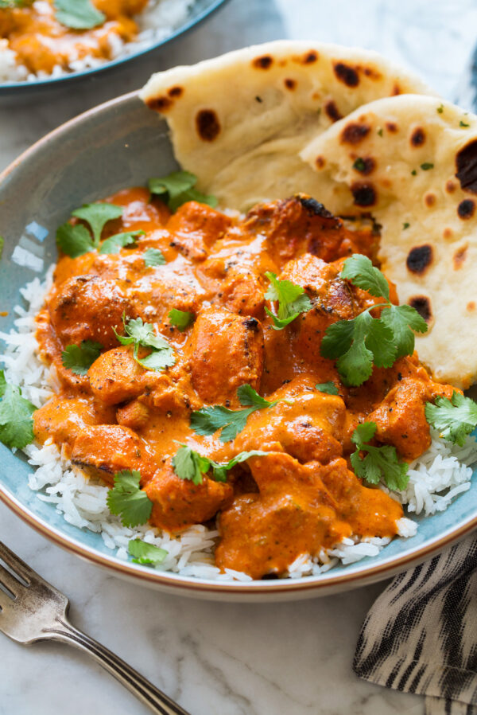

Indian Butter Chicken (Chicken Makhani)

Description
Chicken Makhani is a classic Indian dish. A full flavored dish that can be
made as mild or spicy as you wish by adjusting the cayenne pepper. Serve with
basmati rice and naan bread.
Ingredients
- 1 tablespoon peanut oil
- 1 shallot, finely chopped
- ¼ white onion, chopped
- 2 tablespoons butter
- 2 teaspoons lemon juice
- 1 tablespoon ginger garlic paste
- 1 teaspoon garam masala
- 1 teaspoon chili powder
- 1 teaspoon ground cumin
- 1 bay leaf
- ¼ cup plain yogurt
- 1 cup half and half
- 1 cup tomato puree
- ¼ teaspoon cayenne pepper, or to taste
- 1 pinch salt
- 1 pinch black pepper
- 1 tablespoon peanut oil
- 1 pound boneless, skinless chicken thighs, cut into bit-size pieces
- 1 tablespoon cornstarch
- ¼ cup water
Steps
- Heat 1 tablespoon of oil in a large saucepan over medium high heat
- Saute shallot and onion until soft and translucent
- Stir in butter, lemon juice, ginger-garlic paste, 1 teaspoon garam masala,
chili powder, cumin and bay leaf
- Cook, stirring for one minute
- Add tomato sauce and cook for 2 minutes, stirring frequently
- Stir in half and half and yogurt
- Reduce heat to low, and simmer for 10 minutes, stirring frequently
- Season with salt and pepper
- Remove from heat and set aside
- Heat 1 tablespoon of oil in a large heavy skillet over medium heat
- Cook chicken in skillet until lightly browned, about 10 minutes
- Reduce heat, and season with 1 tablespoon garam masala and cayenne pepper
- Stir in a few spoonfuls of sauce
- Simmer until liquid has reduced and chicken is no longer pink
- Stir cooked chicken into sauce
- Mix cornstarch and water together in a bowl
- Stir into sauce
- Cook for 5 to 10 minutes